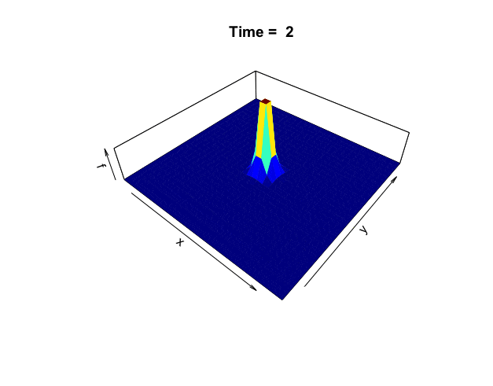
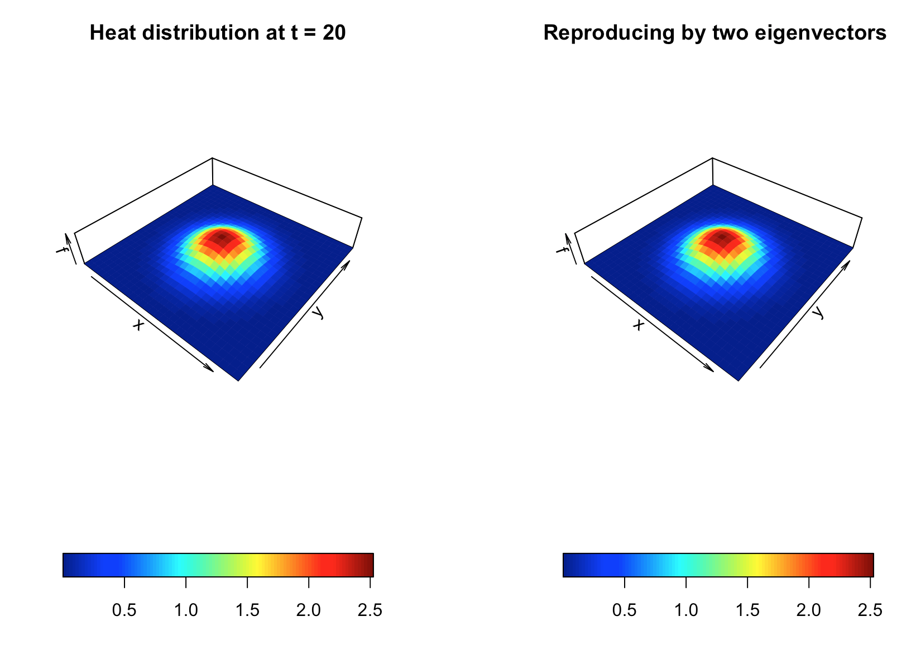

In science, when one experimenting on the particles suspended in the fluid, one has the control to ensure that the trajectories of the particle movements are independent of human factors. In social experiments, the “particles” are, in some sense, ourselves. These “particles” have internal states such as emotion and intelligence. These extra features endow “experimentees” with (perhaps simple) interactional and distributional anti-control capabilities. They can store energy and information, sense their environment, and respond to it. They can change or update their internal states contingently depending on their interactions with each other. In this sense, a simultaneous relationship between the “experimenters” and the “experimentees” naturally can emerge in any social “experiment.”
Let’s think of a social “experiment” as a simultaneous or a structural coupling model. Unlike the causal model that is a collection of premises from which one can deduce a set of propositions along with the order of the causal chain, a simultaneous model is a collection of synchronic equivalence relations from which one merely can deduce the invariants under some appropriate transformations.565 The transformation is often presented by group actions. However, to maintain the invariance under the transformations, the (seemingly disordered) simultaneous model should accompany some ordering parameters that are formed by the “experimentees” and are accepted by the “experimenters” or vice versa. The ordering parameters synchronize the microscopic and the macroscopic behaviors of the experiment. They generate the simple principles which the “particles” would like to follow, and they influence the direction in which the paths of the experiment evolve.
The ordering parameters may depend only on a few principal components. One typical ordering parameter is the time arrow, i.e., the time parameter in a one-parameter semigroup. The time attaches the dynamical law to all components in the system. Meanwhile, the interactions of the components follow some invariant operations. The spectral representation of the dynamics gives us another vision about the ordering: the order of eigenvalues or singular values.566 For example, when the embedding data manifold is a square matrix (circular data manifold), the first eigenvector of the manifold tends to describe the full trend of the series. So projecting the data onto the first eigenvector produces the summation. The following principal order bases, i.e., the 2nd or the 3rd, tend to capture the “low-frequency” components of the data, and the rest basis functions progressively fill in “high-frequency” details.
Other important forms of ordering parameters are the non-negative linear functional, such as the energy, the utility, and (probability) distribution functions.567 For example, heat is a form of energy produced by the particles’ disordered motion (kinetic energy). Heat can convert to and from different forms of energy. The distribution function from the heat equation relates to the Gaussian probability function, which we will see in ch[?]. In practice, man-made indexes, such as wealth or income, tend to play the role of the one-dimensional “ordering” parameter. The simultaneity shaped by this parameter can give rise to specific capitalist social-economic dynamical patterns that bring in inequality and the growth of the society.
All these ordering structures more or less relate to the profound properties of the complex exponential functions and the abstract Fourier basis. The studies of symmetry (and skew-symmetry), invariants, and group transformations of these functions are in a field called harmonic analysis.568 The strength of the harmonic analysis is that the abstract Fourier basis produces an ordered and meaningful summarization of the underlying model or data since the Fourier transformation extracts regularities from model or data by projecting them into invariant subspaces and orders the basis functions in terms of their smoothness.
Eigen-decomposition of the circular data manifold
For an analytic function \(f(z)=u(x,y)+\mbox{i}v(x,y)\), we have seen how to connect the real and imaginary parts of the function through the Cauchy-Riemann relations. Now suppose we are only interested in the real parts of the complex function \(f(z)\), namely \(u(x,y)\). YYou may wonder what would be the analytic revelation accompanying this real-valued function \(u(x,y)\).
The revelation comes with an operation of the second-order partial derivatives. Suppose \(f\) satisfies the Cauchy-Riemann relations so that \(f\) is analytic and has continuous partial derivatives. Differentiating both sides of one Cauchy-Riemann equation \(\frac{\partial u}{\partial x}=\frac{\partial v}{\partial y}\) with respect to \(x\) and differentiating both sides of the other Cauchy-Riemann equation \(\frac{\partial u}{\partial y}=-\frac{\partial v}{\partial x}\) with respect to \(y\), we have \[\frac{\partial^{2}u}{\partial x^{2}}=\frac{\partial^{2}v}{\partial x\partial y},\quad\frac{\partial^{2}u}{\partial y^{2}}=-\frac{\partial^{2}v}{\partial y\partial x}.\] By adding the two equations, we obtain an equation of the second-order partial derivatives of \(u(x,y)\): \[\frac{\partial^{2}u}{\partial x^{2}}+\frac{\partial^{2}u}{\partial y^{2}}=\Delta u(x,y)=0,\] where \(\Delta\) represents the operator that sums up all the second-order partial derivatives and is called the Laplacian operator. The real-valued function \(u(x,y)\) is said to be harmonic if \(\Delta u(x,y)=0\). In other words, for an analytic function \(f(z)=u(x,y)+\mbox{i}v(x,y)\), the real part of the analytic function should be harmonic.570 In a similar manner, we can attain \[\frac{\partial^{2}u}{\partial y\partial x}=\frac{\partial^{2}v}{\partial y^{2}},\\ \frac{\partial^{2}u}{\partial x\partial u}=-\frac{\partial^{2}v}{\partial x^{2}},\] namely \(\Delta v(x,y)=0\). So the imaginary part of the analytic function is also a harmonic function. The function \(v(x,y)\) is called a harmonic conjugate of \(u(x,y)\). Two harmonic functions are said to be harmonic conjugate if they satisfy the Cauchy-Riemann relations.
Notice that the one-dimensional Laplacian operator is nothing else but a second-order differentiation \(\Delta f(x)=\mbox{d}^2 f(x)/\mbox{d} x^2\). We have seen in chapter 14.2 that the eigenfunctions of this Laplacian \(\Delta\) are the trigonometric functions \(\sin(\theta x)\) and \(\cos(\theta x)\) where \((\pm\theta)^2 =\lambda\) are the eigenvalues of \(\Delta\). Discretizing the \(\lambda\) by some integers from \(\mathbb{Z}\), i.e., \(\lambda=k^2\) for \(k\in\mathbb{Z}\), we formed the Fourier basis functions, i.e., \(\phi_k(x) = \mbox{e}^{\mbox{i}kx}\). Thus, if we have a harmonic function, we expect the function to associate with some nice base systems like the Fourier bases.
Figure 18.1: Distribution of the heat
On the other hand, we can think that a harmonic function is (at least locally) a part of an analytic function.Suppose we have a nice base system induced by the harmonic function on \(\mathbb{R}^n\). In that case, the system can be extended to an analytic complex system in \(\mathbb{C}^{n}\) where the complexified system becomes infinite differentiable, , and some complex polynomials can represent the derivative operations of the new system.
Using the harmonic condition to derive some invariant representations and linking some complex phenomena to simple harmonic bases, these two paths somehow point to the big picture of the harmonic analysis.
Code for generating heat distributions
One way to understand harmonicity and invariance is to consider the equilibrium state in heat diffusion problems. In chapter 8.5, we considered the heat equation in one dimension. Now we extend the problem to two dimensions. The following two-dimensional heat equation describes the dynamics in figure 18.1: \[\frac{\partial f(x,y,t)}{\partial t}=-c_{D}\left(\frac{\partial^{2}f}{\partial x^{2}}+\frac{\partial^{2}f}{\partial y^{2}}\right)=-c_{D}\Delta f(x,y,t).\] The harmonic equation \(\Delta f(x,y,t)=0\) can be thought of as the steady-state or equilibrium solution when there is no heat diffusing in the system, namely \(\partial f(x,y,t)/\partial t =0\). The Laplacian operator only counts for the changes regarding the spatial variables \((x,y)\), excluding the time variable \(t\).
To make things more transparent, let’s separate \(f\) into two parts, \(f(x,y,t)=K(x,y)u(t)\), where \(K(\cdot,\cdot)\) is a function capturing the spatial interaction effect between \(x\) and \(y\), and \(u(t)\) is the function capturing the dynamical effect. The 2D heat equation becomes \[K(x,y)\frac{\mbox{d}u(t)}{\mbox{d}t}=-c_{D}u(t)\Delta K(x,y).\] Rearrange the expression and assume an unknown constant \(c\) for ratios \[\frac{\mbox{d}u(t)}{\mbox{d}t}\frac{1}{u(t)}=-c_{D}\frac{\Delta K(x,y)}{K(x,y)}=c.\] We arrive in two separate systems. The interaction system forms an eigenvalue problem \(\Delta K=\lambda K\) where \(\lambda=-c/c_{D}\), and \(K(\cdot,\cdot)\) relates to a kind of the multivariate eigenfunction of the Laplacian operator \(\Delta\). After solving the eigenvalue \(\lambda\), the value of \(c\) becomes available, and so does the solution of the dynamical system \(\mbox{d}u(t)/\mbox{d}t=c\).
Figure 18.2: Reproduce the 1-rank heat matrix
The Laplacian operator can be rewritten as571 Because the gradient operators are linear, the inner product of the two gradient operators is still linear. So Laplacian operator is also a linear operator. \[\begin{align*}\Delta K &=\frac{\partial^{2}K}{\partial x^{2}}+\frac{\partial^{2}K}{\partial y^{2}}\\ &=\underset{\nabla^{\mbox{H}}}{\underbrace{\left(\frac{\partial}{\partial x}-\mbox{i}\frac{\partial}{\partial y}\right)}}\underset{\nabla K}{\underbrace{\left(\frac{\partial K}{\partial x}+\mbox{i}\frac{\partial K}{\partial y}\right)}}= \nabla^{\mbox{H}}\nabla K. \end{align*}\] Let \(\phi\) and \(\psi\) be the eigenfunctions of the gradient operator \(\nabla\) and the adjoint operator \(\nabla^{\mbox{H}}\), respectively. These functions should share the same eigenvalues.572 Recall that the left-hand eigenvector and the right-hand eigenvector, though probably different, must share the same eigenvalues. So we can decompose \(K\) by \(\nabla^{\mbox{H}}\nabla K=\lambda K=\lambda\phi\psi\) where \(\nabla\phi=\sqrt{\lambda}\phi\) and \(\nabla^{\mbox{H}}\psi=\sqrt{\lambda}\psi\).
The above decomposition tells that two 1D orthonormal bases can represent the 2D spatial variation in \(K(\cdot,\cdot)\). We illustrate this decomposition using the data generated by a 2D heat equation. Suppose we have two series of \(x\) and \(y\), such that \(\mathbf{x},\mathbf{y}\in\mathbb{R}^{N}\). Now the realizations of \(K(\cdot,\cdot)\) are recorded in a matrix \[\mathbf{K}=\left[\begin{array}{ccc} K(x_{1},y_{1}) & \cdots & K(x_{1},y_{N})\\ \vdots & \ddots & \vdots\\ K(x_{N},y_{1}) & \cdots & K(x_{n},y_{N}) \end{array}\right].\] By the singular value decomposition, we can decompose \(\mathbf{K}\) as \[\mathbf{K} = \mathbf{U}\mathbf{\Sigma}\mathbf{V}^{\top} =\underset{\Phi}{\underbrace{\left(\mathbf{U}\sqrt{\mathbf{\Sigma}}\right)}}\underset{\Psi^{\top}}{\underbrace{(\mathbf{V}\sqrt{\mathbf{\Sigma}})^{\top}}}=\Phi \Psi^{\top}.\] Note that \([\mathbf{K}^{\top}\mathbf{K}]_{ij}=\sum_{k=1}^{N}K(y_{i},x_{k})K(x_{k},y_{j})\) and \([\mathbf{K}\mathbf{K}^{\top}]_{ij}=\sum_{k=1}^{N}K(x_{i},y_{k})K(y_{k},x_{j})\). Thus the matrix \(\mathbf{U}\), as the eigenvector matrix of \(\mathbf{K}\mathbf{K}^{\top}\), is the basis contributed by the input \(\mathbf{x}\), and \(\mathbf{V}\), as the eigenvector matrix \(\mathbf{V}\) of \(\mathbf{K}^{\top}\mathbf{K}\), is the basis contributed by the input \(\mathbf{y}\).573 The matrix \(\mathbf{K}\) is extremely singular, i.e. a rank-\(1\) matrix \(\mbox{rank}(\mathbf{K})=1\), as the matrix is generated by a single function \(K(x,y)\). There is a compact representation for \(\mathbf{K}\) such that \[\mathbf{K} =\Phi \Psi^{\top} \approx \sigma_1\phi_1(\mathbf{x}) \psi_1^{\top}(\mathbf{y})\] where \(\phi_1(\mathbf{x})\) and \(\psi_1(\mathbf{y})\) are the leading eigenvectors in \(\Phi\) and \(\Psi\) respectively, and \(\sigma_1\) is the leading singular value. In this case, the function \(K(x,y)\) can be thought of as the “outer-product” of two basis functions \(\phi(x)\) and \(\psi(y)\) that respectively span the spaces of \(x\) and \(y\). See figure 18.2. The “outer product” can be formally defined as a tensor product which we will discuss in ch[?].
Reproduction
So far, things go well on two dimensions. But we have to keep in mind that we assume that the 2D heat equation is separable as \(f(x,y,t)=K(x,y)u(t)\). If we drop this assumption, we should think about parameterizing \(K(x,y)\) with the time parameter \(t\), namely a time-varying 2-dimensional “multivariate eigenfunction.”574 Another way is to consider a 3-dimensional “multivariate eigenfunction,” i.e., \(K(x,y,t)\). The way is analogous to construct a triple “product” of three basis functions. However, according to some spatial-temporal philosophical doctrine, the “product” seems to blend two different basic matters, time and space. Also, the triple “product” is not computationally attractive as it faces the curse of dimensionality. Unlike the spatial structure, the long memory encoded in the time \(t\) is hardly decomposable. The rank-\(1\) example in figure 18.2 only uses two eigenvectors, namely \(2\times 100\), to reproduce the \(100\times 100\) \(\mathbf{K}\) matrix. But if we extend the matrix \(\mathbf{K}\) to a short time period of \(100\) time points, we may probably need to store a large portion of the \(200\times 100\) data points rather than three eigenvectors, namely \(3\times 100\) data points.
Here is some intuition about our planned tour of the parameterization. Let’s assume that \(\mathbf{A}\) is a linear operator where the following differential problem \[\frac{\partial K}{\partial t}=\mathbf{A}K,\quad K(x,y,0)=f(x,y,0)\] admits a solution form \(K(x,y,t)=(\mbox{e}^{t\mathbf{A}})f(x,y,0)\).575 The solution form \((\mbox{e}^{t\mathbf{A}})f(x,y,0)\) can reversely define the meaning of operator \(\mathbf{A}\) by the following limit: \[\lim_{t\rightarrow0}\frac{e^{\mathbf{A}t}f-f}{t}=\mathbf{A}f.\] In this case, we call \(\mathbf{A}\) the generator of \(K(x,y,t)=(e^{t\mathbf{A}})f(x,y,0)\). Suppose that we replace the notation \(\mathbf{A}\) with the Laplacian operator \(\Delta\), and suppose the above statement still holds, then we would obtain a parameterized solution.
The above idea of parameterization is rooting in the applications of abstract exponential objects, such as \(\mbox{e}^{t\Delta}\). To grab the meanings of these abstract exponential objects, we need some knowledge about the binary operation and the group structure.576 Recall that the addition and multiplication of real numbers are both binary operations. That is, both addition and multiplication combine two real numbers to obtain one real number. In a nutshell, a binary operation is to associating two objects in a given order that will result in one object as the answer.
The definition tells that a binary operation gives an algebra on the set \(\mathcal{V}\). Let’s consider \(x\ast x\) and let \(\ast\) denote any binary operation. If \(\ast=+\), for any \(a\in\mathbb{R}\), \(x\ast x=x+x=a\) has a solution \(x=a/2\in\mathbb{R}\). However, if \(\ast=\times\), then for some \(a\in\mathbb{R}\), \(x\ast x=x\times x=a\) may have no solution, e.g., \(a<0\). In this case, we can see that when the same set of \(\mathbb{R}\) is equipped with a different binary operation, it displays a very algebraic structure. However, sometimes two different sets with very different binary operations turn out to have the same algebraic structure. For example, the algebraic structure \((\mathbb{R},+)\) is the same as the algebraic structure \((\mathbb{R}^{+}, \times)\) under the exponential function \(\mbox{e}^{(\cdot)}:\mathbb{R}\rightarrow\mathbb{R}^{+}\): \[\mbox{e}^{s+t}=\mbox{e}^{s}\times\mbox{e}^{t},\, \mbox{ for } s,t\in\mathbb{R}.\] In another way, we can write as \[\psi(t\ast s)=\mbox{e}^{(t+s)}=\mbox{e}^{t}\times\mbox{e}^{s}=\psi(t)\ast'\psi(s)\] which says that two binary algebraic structures, one for \(s\) and \(t\) in \((\mathcal{V},\ast)\) and the other for \(\mbox{e}^{s}\) and \(\mbox{e}^{t}\) in \((\mathcal{V}',\ast')\), are structurally alike, called isomorphism, under the bijective map \(\psi=\mbox{e}^{(\cdot)}\).577 Formally speaking, Let \((\mathcal{X},\ast)\) and \((\mathcal{X}',\ast')\) be binary algebraic structures. An isomorphism of \(\mathcal{X}\) with \(\mathcal{X}'\) is a one-to-one function \(\psi\) mapping \(\mathcal{X}\) onto \(\mathcal{X}'\) such that \(\phi(x\ast y)=\phi(x)\ast'\phi(y)\) for all \(x,y\in\mathcal{X}\).
Associativity: \((f\ast g)\ast h=f\ast(g\ast h)\) for all \(f,g,h\in\mathcal{G}\).579 Associativity holds for all elements in the binary algebraic structures \((\mathbb{F},+)\) and \((\mathbb{F},\times)\).
Existence of an identity element \(\mbox{Id}\): \(\mbox{Id} \ast f=f\ast \mbox{Id}=f\) for all \(f\in\mathcal{G}\).580 Note that the identity element \(\mbox{Id}\) often appears in different notations under different contexts. For example, \(0\) denotes an additive identity element in \((\mathbb{R},+)\) and \(1\) denotes the multiplicative identity element in \((\mathbb{R},\times)\). Furthermore, vectors \(\mathbf{0}\) and \(\mathbf{1}\) are the identity elements in \((\mathbb{F}^{n},+)\) and \((\mathbb{F}^{n},\times)\), respectively.
Existence of the inverse: For each \(f\in\mathcal{G}\), there is an element \(g\in\mathcal{G}\) such that \(f\ast g=g\ast f= \mbox{Id}\). The element \(g\) is the inverse of \(f\) denoted by \(f^{-1}\).
We can see that if we let \(\mathcal{G}=\{ \mbox{e}^{x}: x\in \mathbb{F} \}\), then \((\mathcal{G}, \times)\) is a group.581 Since \(\mathbf{e}^{x}\in \mathbb{F}\), the associativity holds for the multiplication. The identity element is \(1\). The inverse is \(\mbox{e}^{(-x)}\).
All the \(m\times n\) matrices come with the binary operations addition \(+\) and scalar multiplication \(\times\), so they form a group called matrix group.
All the \(n\times n\) invertible matrices with real number entities together with additive operations \(+\), scalar multiplication \(\times\), and the matrix multiplicative binary operation \(\times\) also form a group called the general linear group of degree \(n\), usually denoted by \(\mbox{GL}(n,\mathbb{R})\).582 Associativity holds for all elements in \((\mathbb{F}^{n\times n},+)\) or \((\mathbb{F}^{n\times n},\times)\). The identity element is the identity matrix \(\mathbf{I}\) under \(+\) or \(\times\). The inverse is \(-\mathbf{A}\) under \(+\) and \(\mathbf{A}^{-1}\) under \(\times\) since \(\mathbf{A}\) is invertible.
Also, all invertible linear operators \(\mathbf{T}:\mathbb{R}^{n}\rightarrow\mathbb{R}^{n}\) together with the composition binary operation \(\circ\) forms a group, usually denoted by \(\mbox{GL}(\mathbb{R}^{n})\). It is easy to see that \(\mbox{GL}(n,\mathbb{R})\) and \(\mbox{GL}(\mathbb{R}^{n})\) are isomorphic, as we have \(\mathbf{T}(\mathbf{x})=\mathbf{A}\mathbf{x}\).
The exponential function of a square matrix \(\mathbf{A}\in \mathbb{R}^{n\times n}\) and the exponential function of a linear operator \(\mathbf{A}:\mathbb{R}^{n}\rightarrow \mathbb{R}^{n}\) are defined in a similar manner as the scalar exponential functions:583 However, there is one important difference. The commutativity property \(\mbox{e}^{z+w}=\mbox{e}^{z}\mbox{e}^{w}\) that holds for \(z,w\in\mathbb{R}\) or \(z,w\in\mathbb{C}\) is no longer valid. Because matrices or functions are not commutative under the matrix multiplication or the functional composition in general, namely \(\mathbf{A}\mathbf{B}\neq \mathbf{B}\mathbf{A}\). According to the definition, \[\begin{align*}\mbox{e}^{\mathbf{A}\mathbf{B}}&=\mathbf{I}+\mathbf{A}\mathbf{B}+\cdots \\ &\neq \mathbf{I}+\mathbf{B}\mathbf{A}+\cdots =\mbox{e}^{\mathbf{B}\mathbf{A}}\end{align*}\] unless \(\mathbf{A}\) and \(\mathbf{B}\) are commutative. \[\mbox{e}^{\mathbf{A}}=\mbox{Id}+\mathbf{A}+\frac{1}{2}\mathbf{A}^{2}+\cdots=\sum_{k=0}^{\infty}\frac{(\mathbf{A})^{k}}{k!}.\]
For any \(s,t\in\mathbb{F}\), we can prove that \(\mbox{e}^{(s+t)\mathbf{A}}=\mbox{e}^{s\mathbf{A}}\mbox{e}^{t\mathbf{A}}\).
Proof
This property ensures that any (square) matrix exponential function \(\mbox{e}^{\mathbf{A}}\) has its multiplicative inverse \(\mbox{e}^{(-\mathbf{A})}\) as \[\mathbf{I}=\mbox{e}^{\mathbf{O}}=\mbox{e}^{(1+ (-1))\times \mathbf{A}}=\mbox{e}^{\mathbf{A}}\mbox{e}^{-\mathbf{A}}\] where \(\mathbf{O}\) is the \(n\times n\) matrix of all zeros. So the set of all (square) matrix exponential functions form a general linear group of degree \(n\). In other words, the exponential function maps the elements from the \(n\times n\) matrix group to \(\mbox{GL}(n,\mathbb{R})\). Similarly, for any linear operator \(\mathbf{A}:\mathbb{R}^{n}\rightarrow \mathbb{R}^{n}\), the exponential function maps it to the group \(\mbox{GL}(\mathbb{R}^{n})\).
For our parameterization task, we are especially interested in the group of linear operators \(\mbox{e}^{t\mathbf{A}}:\mathbb{R}^{n}\rightarrow \mathbb{R}^{n}\) with the parameter \(t\in\mathbb{R}\), called the one-parameter exponential family.
Any member from the one-parameter exponential family satisfies \[\frac{\mbox{d}}{\mbox{d}t}\mbox{e}^{t\mathbf{A}}=\mathbf{A}\mbox{e}^{t\mathbf{A}}\] because the definition of the exponential function gives\[\frac{\mbox{d}}{\mbox{d}t}\mbox{e}^{t\mathbf{A}}=\sum_{k=0}^{\infty}\frac{\mbox{d}}{\mbox{d}t}\frac{t^{k}}{k!}\mathbf{A}^{k}=\mathbf{A}\sum_{k=0}^{\infty}\frac{t^{k}}{k!}\mathbf{A}^{k}=\mathbf{A}\mbox{e}^{t\mathbf{A}}.\] Thus, the one-parameter exponential family \(\{\mbox{e}^{t\mathbf{A}}\}_{t\in\mathbb{R}}\) associates with the solutions of the following differential equation584 If we simplify \(\mathbf{A}\) as a number \(a\in\mathbb{R}\). We have \[\begin{align*}\psi_{s+t}(x)&=\mbox{e}^{(s+t)a}f(x,0)=\mbox{e}^{sa}\mbox{e}^{ta}f(x,0)\\ &=(\psi_s\circ\psi_t)(x).\end{align*}\] The group \((\mathbb{R}^{+},\times)\) of elements \(\{\mbox{e}^{t}\}_{t\in\mathbb{R}}\) acts on \(f(x,0)\). So the solution is a group acting of the \(f(x,0)\) called group action. Here the parameter \(t\) is from the group \((\mathbb{R},+)\), and it is isomorphic to \((\mathbb{R}^{+},\times)\). So we can also say the parameter group \((\mathbb{R}^{+},\times)\) acting on \(f(x,0)\) results the solution of \(f(x,t)\). \[\frac{\mbox{d}\mathbf{f}(t)}{\mbox{d}t}=\mathbf{A}\mathbf{f}(t)\] where \(\mathbf{f}(t):\mathbb{R}\rightarrow\mathbb{R}^{n}\) is some function evaluated at \(n\) points at time \(t\).585 For example, the heat function \(f(x,y,t)\) evaluated at \(30\) spatial points of \(x\) and \(y\) gives \(n=900\) points at time \(t\). The operator \(\mathbf{A}\) can be thought of as a \(900\times 900\) second-order difference matrix defined in chapter 11.3. (However, one needs to sort the points in a particular way to make the matrix work properly. But this sorting is not our concern now.)
In particular, we know that the differentiation operator \(\frac{\mbox{d}}{\mbox{d}t}:\mathbb{R}^{n}\rightarrow\mathbb{R}^{n}\) is a linear operator. For any \(s\in\mathbb{R}\), we can prove that the exponential linear operator function is \[\mbox{e}^{s\left(\frac{\mbox{d}}{\mbox{d}t}\right)}=\mathbf{L}^{-s},\] where \(\mathbf{L}^{-s}:\mathbb{R}^{n}\rightarrow\mathbb{R}^{n}\) is the operator translating forwardly of the object by \(s\) units such that \((\mathbf{L}^{-s}\mathbf{f})(0)=\mathbf{f}(s)\). This exponential linear operator function provides the generic (numerical) solution of the differential equations.586 For the heat equation problem, we have \(\mbox{d}/\mbox{dt}(\cdot)=\Delta(\cdot)\). So the solution is \[\mbox{e}^{s\left(\frac{\mbox{d}}{\mbox{d}t}\right)}\mathbf{f}(0)=\mbox{e}^{s\Delta}\mathbf{f}(0)=\mathbf{f}(s).\] Basically, the solution tells us at any time \(t\) an exponential family \(\mbox{e}^{t\Delta}\) acting on vectorized initial data \(\mathbf{f}(0)\), and the action describes how the heat diffuses at time \(t\).
Sketch of the proof
Page built: 2021-06-13